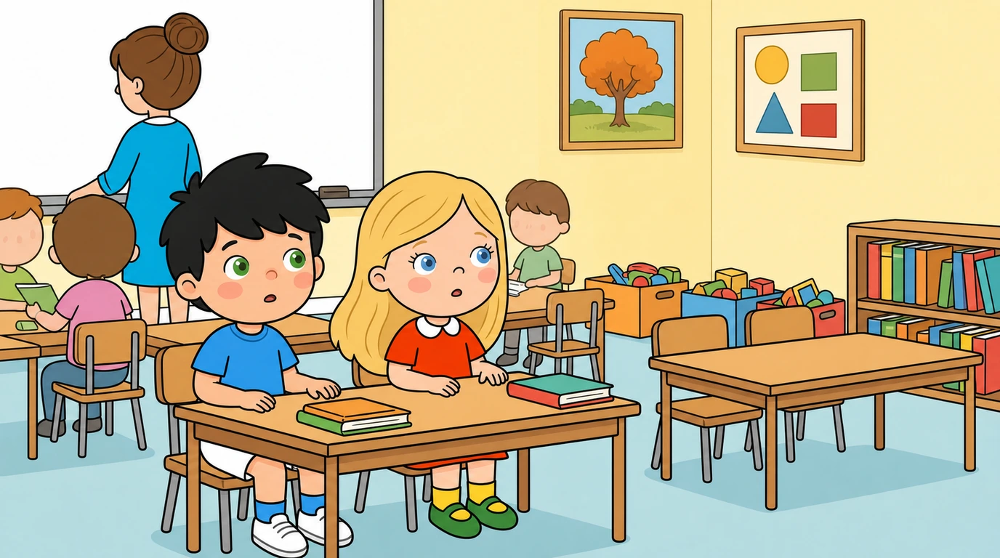
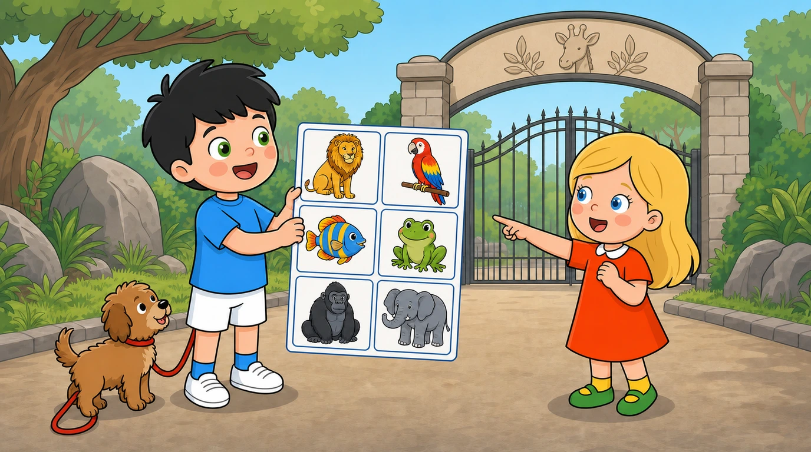
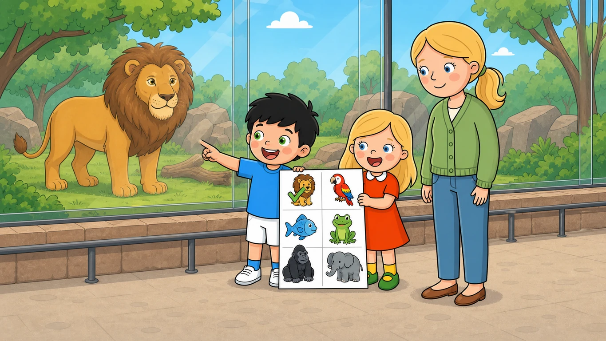
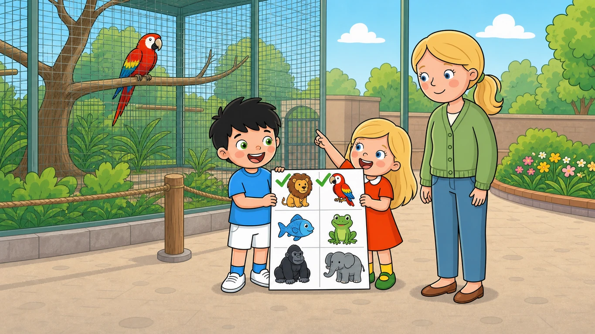
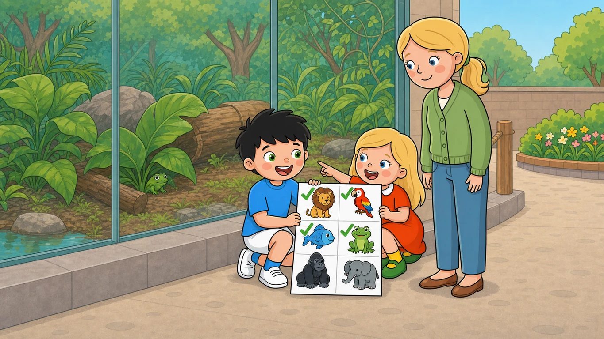
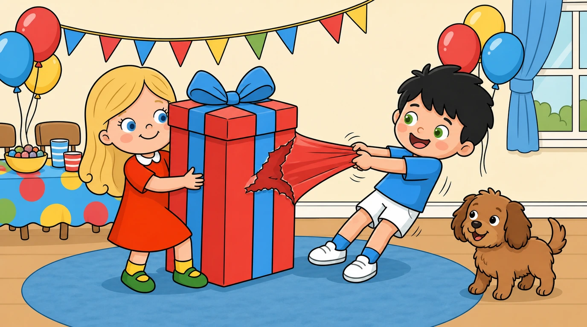
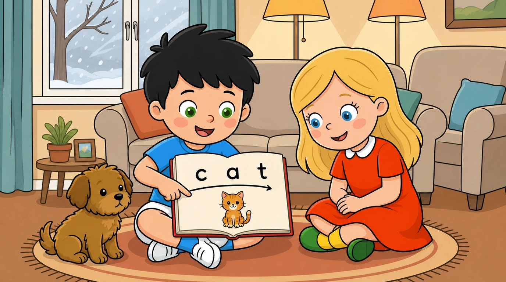

page
/guided-reading/series/bob-and-nan/book-01/page-006.webppage
/guided-reading/series/bob-and-nan/book-01/page-007.webpcover
/guided-reading/series/bob-and-nan/book-02/cover.webppage
/guided-reading/series/bob-and-nan/book-02/page-001.webppage
/guided-reading/series/bob-and-nan/book-02/page-002.webppage
/guided-reading/series/bob-and-nan/book-02/page-003.webppage
/guided-reading/series/bob-and-nan/book-02/page-004.webppage
/guided-reading/series/bob-and-nan/book-02/page-005.webppage
/guided-reading/series/bob-and-nan/book-02/page-006.webppage
/guided-reading/series/bob-and-nan/book-02/page-007.webp
cover
/guided-reading/series/bob-and-nan/book-03/cover.webppage
/guided-reading/series/bob-and-nan/book-03/page-001.webppage
/guided-reading/series/bob-and-nan/book-03/page-002.webppage
/guided-reading/series/bob-and-nan/book-03/page-003.webppage
/guided-reading/series/bob-and-nan/book-03/page-004.webppage
/guided-reading/series/bob-and-nan/book-03/page-005.webppage
/guided-reading/series/bob-and-nan/book-03/page-006.webppage
/guided-reading/series/bob-and-nan/book-03/page-007.webpcover
/guided-reading/series/bob-and-nan/book-04/cover.webppage
/guided-reading/series/bob-and-nan/book-04/page-001.webppage
/guided-reading/series/bob-and-nan/book-04/page-002.webppage
/guided-reading/series/bob-and-nan/book-04/page-003.webppage
/guided-reading/series/bob-and-nan/book-04/page-004.webppage
/guided-reading/series/bob-and-nan/book-04/page-005.webppage
/guided-reading/series/bob-and-nan/book-04/page-006.webppage
/guided-reading/series/bob-and-nan/book-04/page-007.webpcover
/guided-reading/series/bob-and-nan/book-05/cover.webp
page
/guided-reading/series/bob-and-nan/book-05/page-001.webppage
/guided-reading/series/bob-and-nan/book-05/page-002.webppage
/guided-reading/series/bob-and-nan/book-05/page-003.webppage
/guided-reading/series/bob-and-nan/book-05/page-004.webppage
/guided-reading/series/bob-and-nan/book-05/page-005.webp
page
/guided-reading/series/bob-and-nan/book-05/page-006.webppage
/guided-reading/series/bob-and-nan/book-05/page-007.webpcover
/guided-reading/series/bob-and-nan/book-06/cover.webp
page
/guided-reading/series/bob-and-nan/book-06/page-001.webp
page
/guided-reading/series/bob-and-nan/book-06/page-002.webp
page
/guided-reading/series/bob-and-nan/book-06/page-003.webppage
/guided-reading/series/bob-and-nan/book-06/page-004.webp
page
/guided-reading/series/bob-and-nan/book-06/page-005.webppage
/guided-reading/series/bob-and-nan/book-06/page-006.webppage
/guided-reading/series/bob-and-nan/book-06/page-007.webppage
/guided-reading/series/bob-and-nan/book-06/page-008.webpcover
/guided-reading/series/bob-and-nan/book-07/cover.webppage
/guided-reading/series/bob-and-nan/book-07/page-001.webppage
/guided-reading/series/bob-and-nan/book-07/page-002.webppage
/guided-reading/series/bob-and-nan/book-07/page-003.webp
page
/guided-reading/series/bob-and-nan/book-07/page-004.webppage
/guided-reading/series/bob-and-nan/book-07/page-005.webppage
/guided-reading/series/bob-and-nan/book-07/page-006.webppage
/guided-reading/series/bob-and-nan/book-07/page-007.webppage
/guided-reading/series/bob-and-nan/book-07/page-008.webpcover
/guided-reading/series/bob-and-nan/book-08/cover.webppage
/guided-reading/series/bob-and-nan/book-08/page-001.webppage
/guided-reading/series/bob-and-nan/book-08/page-002.webppage
/guided-reading/series/bob-and-nan/book-08/page-003.webppage
/guided-reading/series/bob-and-nan/book-08/page-004.webppage
/guided-reading/series/bob-and-nan/book-08/page-005.webppage
/guided-reading/series/bob-and-nan/book-08/page-006.webppage
/guided-reading/series/bob-and-nan/book-08/page-007.webppage
/guided-reading/series/bob-and-nan/book-08/page-008.webpcover
/guided-reading/series/bob-and-nan/book-09/cover.webppage
/guided-reading/series/bob-and-nan/book-09/page-001.webppage
/guided-reading/series/bob-and-nan/book-09/page-002.webppage
/guided-reading/series/bob-and-nan/book-09/page-003.webp
page
/guided-reading/series/bob-and-nan/book-09/page-004.webppage
/guided-reading/series/bob-and-nan/book-09/page-005.webppage
/guided-reading/series/bob-and-nan/book-09/page-006.webppage
/guided-reading/series/bob-and-nan/book-09/page-007.webppage
/guided-reading/series/bob-and-nan/book-09/page-008.webpcover
/guided-reading/series/bob-and-nan/book-10/cover.webppage
/guided-reading/series/bob-and-nan/book-10/page-001.webppage
/guided-reading/series/bob-and-nan/book-10/page-002.webppage
/guided-reading/series/bob-and-nan/book-10/page-003.webppage
/guided-reading/series/bob-and-nan/book-10/page-004.webppage
/guided-reading/series/bob-and-nan/book-10/page-005.webppage
/guided-reading/series/bob-and-nan/book-10/page-006.webppage
/guided-reading/series/bob-and-nan/book-10/page-007.webppage
/guided-reading/series/bob-and-nan/book-10/page-008.webpcover
/guided-reading/series/dino-pals/book-01/cover.webp